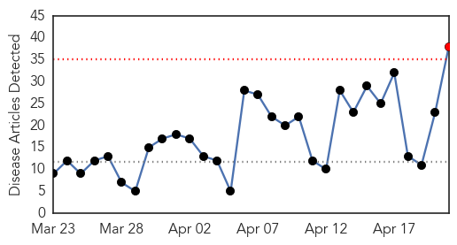
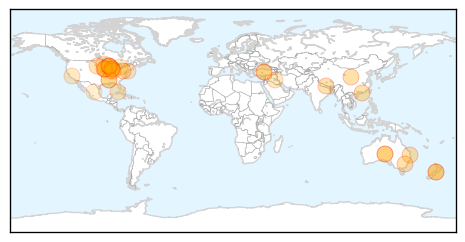
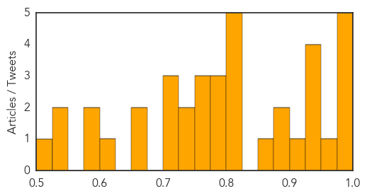

Toggle navigation
Early Warning
Daily Alerts
Influenza
Apr 21, 2015
Compare to:
-
Dengue Fever
Hemmorhagic Fever
Mold/Fungal Infection
Meningitis
Pertussis / Whooping Cough
Middle East Respiratory Syndrome
Cholera
Hepatitis
Chikungunya
Yellow Fever
Bubonic Plague
West Nile Virus
Swine Flu
Ebola
Measles
Unknown
Mumps
30 Day Trends
Web: 1
alerts
, 0
warnings
Twitter: 1
alerts
, 0
warnings
Top Articles:
1.000
Flu Shots, Vaccines, Bird Flu and Swine Flu
0.999
Avian Flu Fast Facts
0.992
Local vets, animal shelters on alert for dog flu
0.992
More medics to fight epidemic
0.990
ACT Health to address six week wait for vaccinations in north Canberra
0.967
Hon Teresa Gambaro MP - Federal Member for Brisbane
0.943
Flu vaccine is available
0.940
Iowa Farm To Kill 5 Million Chickens In Effort To Contain Avian Flu : The Two-Way : NPR
0.937
Coleman launches flu immunisation campaign
0.928
Coleman launches flu immunisation campaign « LiveNews.co.nz
0.908
Get your flu shot before flu gets you
0.898
Governor Declared State Of Emergency After Bird Flu Outbreak Affected More Than 300,000 Birds
0.894
Canine Flu Reaches Indiana - Story
0.863
Bird Flu Continues To Plague Iowa Farms, Millions Of Chickens Affected
0.825
What the bird flu means for producers, consumers
0.819
UPDATED: Dog flu hits C-U; kennels taking precautions
0.819
UPDATED: Dog flu hits C-U; kennels taking precautions
0.815
Outbreak of dog flu caused by new strain of virus
0.813
UPDATE: Walker declares state of emergency over bird flu
0.790
Millions of hens to be euthanized at Iowa farm with bird flu
0.782
Bird Flu Hits Flock Of 5.3 Million Chickens In Iowa, US's Biggest Egg-Producing State : LIFE : Tech Times
0.782
Wisconsin Declares Emergency, 5.3-Million Iowa Chickens Affected by Avain Influenza
0.767
Coleman launches flu immunisation campaign
0.751
April 20, 2015 Archives
0.751
April 20, 2015 Archives
0.733
H5N2 strikes again in Iowa, Minnesota
0.732
Turkey Growers share information on avian influenza
0.710
Canine Flu Reported in Indiana What Dog Owners Should Know
0.707
Bird flu takes big toll as virus hits chicken farms
0.701
Bird flu takes biggest toll yet in Midwest
0.652
Articles, event listings and opinion
0.651
Will the dog flu hit D.C.?
0.616
Bird flu outbreak prompts Wisconsin to declare emergency, call in National Guard
0.595
Ontario bird flu hits chicken farm
0.592
5.3mn hens to be slaughtered as huge bird flu outbreak reported in Iowa — RT USA
0.550
UPDATE 1-Mexico bans poultry, egg imports from bird flu-hit Iowa
0.532
Avian flu crisis grows for poultry producers throughout USA
0.501
Avian flu crisis grows for poultry producers throughout USA
Top Tweets:
No tweets found for Apr 21, 2015
Web/News Articles

Tweets
Article Locations

Article Confidences
